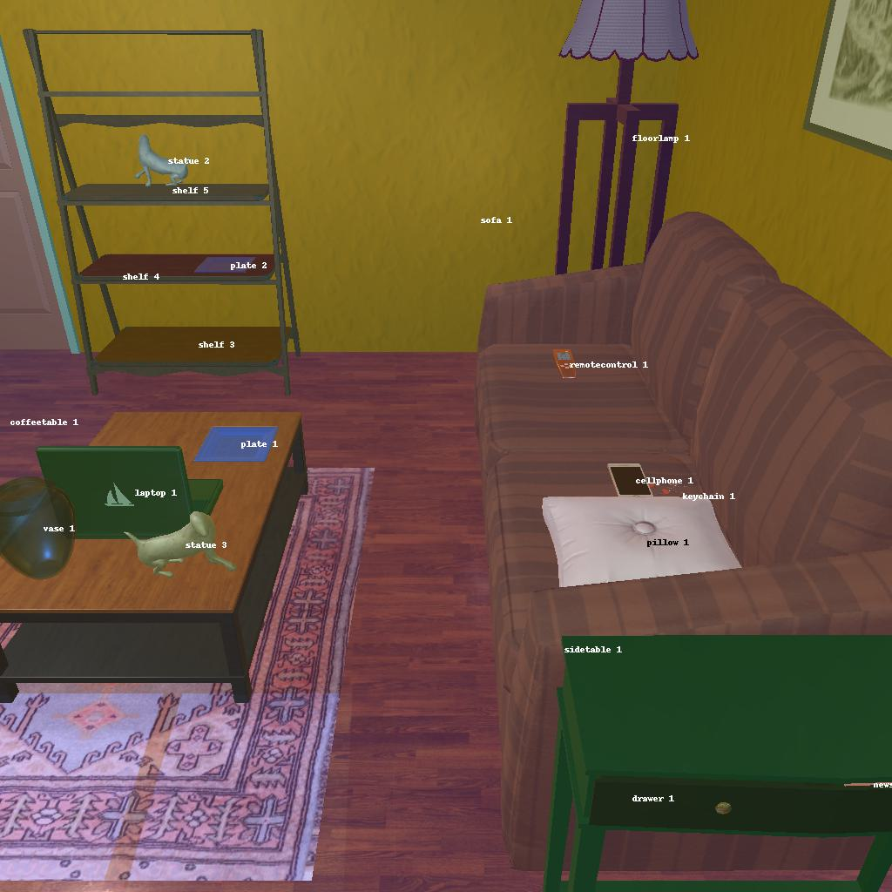

---------------------------------------------------------task: 3---------------------------------------------------------
--------------------------------------------------------------------------------------------------------------------------------------------------------------------
--------------------------------------------------------------------------------------------------------------------------------------------------------------------
Step:--------------------------------------------------------------------------7-------------------------------------------------------------------------------
----------------------------------------
VLM Prompt:
Image1:
Image2:
**Instruction**
1. Analyze the provided image to identify all visible household objects, focusing on those relevant to the task description "examine the plate with the floorlamp."
2. Use the analysis of the image and the task hint "The agent must find an object of the desired type, locate and turn on a light source with the desired object in-hand." to answer the question: what is the most reasonable action in the choices for the task description "examine the plate with the floorlamp"?
4. Decide and write the answer using the template: The answer is: (i): , where i is the real number. If there is no desired object in the image, search every place based on **Initial Observation** to find the object. And if no one is exactly correct, choose a similar answer.
**Initial Observation**
You are in the middle of a room. Looking quickly around you, you can see armchair (1), garbagecan (1), tvstand (1), shelf (1-5), sofa (1), coffeetable (1), sidetable (1-2), drawer (1)
**Answer Choices**
(1): go to armchair 1
(2): go to garbagecan 1
(3): go to tvstand 1
(4): go to shelf 1
(5): go to shelf 2
(6): go to sofa 1
(7): go to coffeetable 1
(8): go to sidetable 1
(9): go to sidetable 2
(10): go to shelf 3
(11): go to shelf 5
(12): take statue 2 from shelf 4
(13): examine shelf 4
**Answer**
Let's think step by step by following the instructions.
----------------------------------------
----------------------------------------
Original Response:
First, we need to identify all visible household objects relevant to the task description "examine the plate with the floorlamp." In Image 1, we can see a plate on the coffeetable labeled as "plate 1" and a floorlamp in the corner labeled as "floorlamp 1."
Next, according to the task hint, the agent must find an object of the desired type (in this case, a plate), locate and turn on a light source (the floorlamp) with the desired object in-hand.
Based on the Initial Observation, we know that there are no plates listed on any shelves or other furniture except the one on the coffeetable. Therefore, the agent should go to the coffeetable to take the plate.
After taking the plate, the agent would then go to the floorlamp to examine the plate with the light source.
The answer is: (7): go to coffeetable 1
----------------------------------------
----------------------------------------
>>> Refine Original VLM Response and Get Pure Action: go to coffeetable 1
----------------------------------------
-----------------------------------------------------------------
Running time: 9.47476053237915 seconds
Total Money: 1.3538499999999998
-----------------------------------------------------------------
-----------------------------------------------------------------
Text Observation:You arrive at loc 6. On the coffeetable 1, you see a floorlamp 1, a laptop 1, a vase 1, a pillow 1, a plate 1, a cellphone 2, a statue 3, a remotecontrol 1, a cellphone 1, and a keychain 1.
-----------------------------------------------------------------
UNSUCCEED